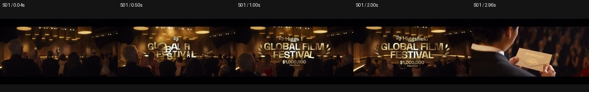
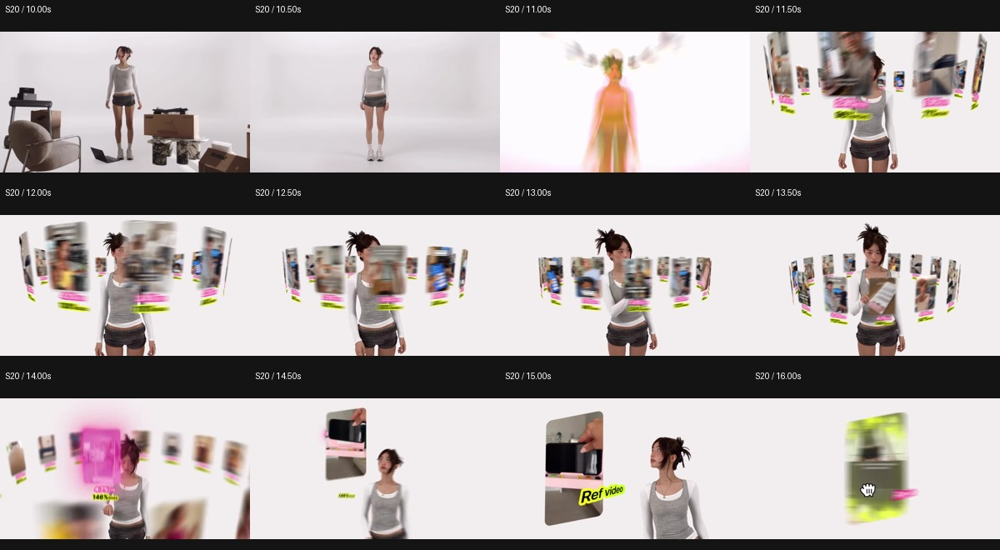
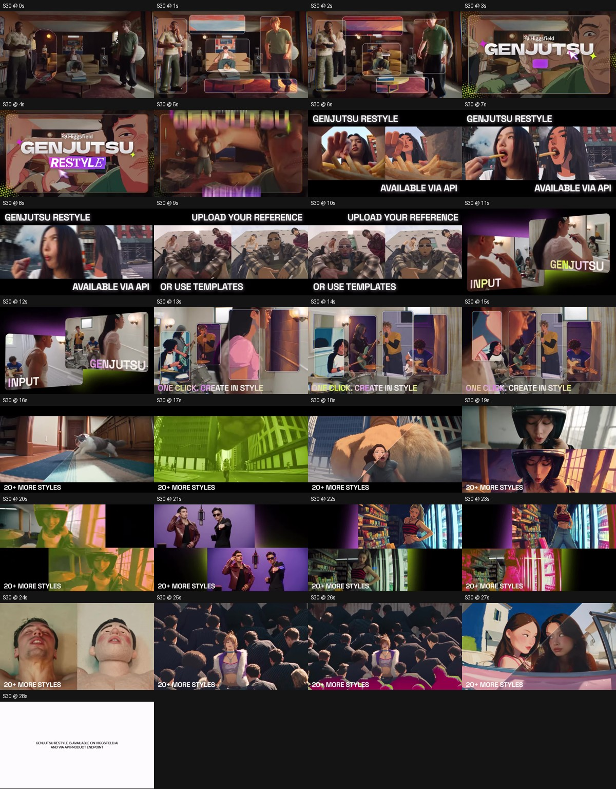

SOCIAL CREATIVE RESEARCH · 2026-10-21
Higgsfield 的调性，
具体由哪些创作选择构成？
36 个封面与 36 条视频的分镜抽样：从视觉身份、人物、混合媒介、产品解释，到时长与内容系列。
核心判断：它把人物、情境、界面动效和生成结果组织成连续的解释过程。审美识别、功能理解与传播入口在同一条内容里互相接续。
阅读说明 · 分镜抽样、声音与工具证据边界
这是带原帖和分镜证据的视觉研究，不是 36 条有声完整观看记录。已查看 36 个封面、逐条抽取开头及不同时间点的画面，并核对公开文案、时长与媒体画幅。20 分钟电影按代表时间点抽样。音乐听审未完成：当前模型输入不支持音频，即使已取得音轨，也不能可靠判断曲风、乐器、音效、配音表现或卡点质量。Remotion 未获得制作证据；报告只描述可观察的动效组织。画面中的产品能力与效果数字视为广告主张，未经独立验证。
36封面与独立视频样本
49.4 秒35 条非长篇电影的时长中位数
12 / 35不足 30 秒
30 : 6横向 : 竖向媒体画幅
前三秒、节奏和 MG，具体好在哪里？
一条功能主张，用多个案例证明；每次换画面，都把观众的注意力交给下一个明确对象。
这一版给原有 36 条样本补了开头与结构卡，重点细看 3 条短片的完整视觉节奏、5 组 MG 的交接过程，并增加热点使用与多 showcase 编排。原有绿色顶线、封面墙、16 个观察和样本链接全部保留。
这一版怎么让判断更可检查
每个判断尽量分为：画面事实 → 对观看的解释 → 可练习的做法。开头以 0.04 / 0.5 / 1 / 2 / 2.96 秒抽帧，重点片段另以更密时间点复看。阶段边界与 showcase 分组为人工近似标注，不是精确逐帧剪辑点。所有新增播放器都为无声研究片段；“视觉呼吸”不含音乐听感。MG 维度用于解释和学习，不是全球排名，也不是对 Remotion 的工具鉴定。
01 · Hook 把观众放进一个需要继续看的状态
直接进入一个动作、一个不符合常识的主体，或者一个正在实现的效果，观众会先产生问题。功能名稍后出现，就能给刚才的刺激一个归因。也有片子以品牌、场景或承诺开场；不能把所有动态片头都算成动作冲突。
动作已经开始，结果还没落定
掰手腕的力量反差、派对里的挥掌、电梯前的追赶、跑步机上的跌倒，让“谁在做什么”先于功能介绍成立。
可检查：暂停在 0.5 秒，能否说出主角和正在发生的动作？看至 3 秒，是否仍想知道动作的原因或后果？
反差、效果与承诺，也能留住注意力
猩猩得到工具、没有脸的嘴唇、同机位瞬间换人、局部画风直接改变，分别提供“为什么”“会怎样”“怎么做”的问题。
可检查：观众是否需要先理解复杂设定，才知道画面有趣在哪里？功能出现之后，是否回应了开场造成的问题？
以下每条只记录一个主要入口，避免多重计数。分类是人工视觉编码；它描述开场形式，不代表留存效果。
品牌与场景 · 7 条动作与事件 · 12 条反常主体与尺度 · 6 条即时效果 · 3 条结果与承诺 · 8 条

播放这条的前 3 秒（无声）
整片的结构路线 · 人工概括
呼吸或连续性的可见支点
查看原有完整分镜 →展开全部 36 条开头与结构索引
| 样本 | 主要入口 | 0–3 秒可见内容 | 整片组织 |
|---|
| 样本 01 | 品牌与场景 | 颁奖礼、奖金额与待揭晓信封 | 多作品集锦 |
| 样本 02 | 动作与事件 | 体型悬殊的人物正在掰手腕 | 多能力展示 |
| 样本 03 | 动作与事件 | 派对里连续挥掌的身体冲突 | 多 showcase |
| 样本 04 | 动作与事件 | 黄裙人物沿高坡道升空、翻转 | 多 showcase |
| 样本 05 | 动作与事件 | 夸张人物跳进敞篷车，车内乘客反应 | 同一 case 多变体 |
| 样本 06 | 反常主体与尺度 | 黑暗中出现缓慢清晰的地球/宇宙视野 | 单主题时尚叙事 |
| 样本 07 | 反常主体与尺度 | 白棚里的猩猩，文字说把 Higgsfield 给它用 | 寓言式单故事 |
| 样本 08 | 品牌与场景 | 镜头快速进入复古演播室，主持人起身 | 情境教程 |
| 样本 09 | 即时效果 | 同一自拍机位里，讲解者迅速换成不同人物 | 多应用教程 |
| 样本 10 | 反常主体与尺度 | 鱼眼式浴室视角迅速推近脸部；飞蛾在后续出现 | 多细节展示 |
| 样本 11 | 动作与事件 | 战场上倒伏的盔甲群，一个骑士站起来 | 多故事叙事 |
| 样本 12 | 动作与事件 | 电梯中的两人突然抬头，紧接出现夸张发型群像 | 连续短剧 |
| 样本 13 | 结果与承诺 | 对话框正在输入制作发布片的要求 | 完整结果演示 |
| 样本 14 | 品牌与场景 | 高饱和动态字标先宣布 Wan 3.0 Unlimited | 单场景多变体 |
| 样本 15 | 反常主体与尺度 | 骑马旗帜切至夜间建筑上的发光人名 | 品牌合作宣布 |
| 样本 16 | 即时效果 | 举哑铃的人快速变为同姿态肌肉狗 | 多 showcase 情境讲解 |
| 样本 17 | 结果与承诺 | API 字标与折扣迅速组装，接传播力主张 | 论点式集锦 |
| 样本 18 | 结果与承诺 | 窗光里的讲解者提出关于“剪辑感受”的问题 | 情境讲解 + 多例 |
| 样本 19 | 动作与事件 | 人物冲进电梯，身形被门内的大个子遮挡 | 连续短剧 |
| 样本 20 | 动作与事件 | 跑步机上的人物约一秒内跌倒 | 单业务情境 + 多变体 |
| 样本 21 | 结果与承诺 | 车内自拍讲解，周围坐着熟悉的夸张角色 | 多应用教程 |
| 样本 22 | 动作与事件 | 人形主体从高台跃出，空间突然改变 | 短模型发布 |
| 样本 23 | 品牌与场景 | 食物贴近鱼眼镜头，广告字标迅速进入 | 单商家工作流 |
| 样本 24 | 动作与事件 | 街头人物像游戏角色一样攻击方块，血条下降 | 招募故事 + 多人物 |
| 样本 25 | 结果与承诺 | 动画参考图与讲解者上下并置，点明 2D 到 3D | 制作过程教程 |
| 样本 26 | 反常主体与尺度 | 小猫穿盔甲握剑，旁边是夸张身材人物 | 情境发布 + 多例 |
| 样本 27 | 品牌与场景 | 中世纪绘画与产品名并置，剑和人物开始变化 | 同一设计逐步转化 |
| 样本 28 | 结果与承诺 | 极简白房间里人物起身，模型标题出现 | 单空间多编辑 |
| 样本 29 | 结果与承诺 | 餐车/老板/食物快速交替，直接提出卖餐的情境 | 单商家工作流 |
| 样本 30 | 即时效果 | 同一房间的局部被框选，并即时变为不同画风 | 多 showcase |
| 样本 31 | 品牌与场景 | 彩色图形和 Extension 字标宣布接入 | 单人物工作流 |
| 样本 32 | 反常主体与尺度 | 一张脱离面孔的嘴唇放大、张口 | 多表演展示 |
| 样本 33 | 品牌与场景 | 彩色小角色与两方品牌先建立身份 | 多步骤任务讲解 |
| 样本 34 | 动作与事件 | 城市里两人交谈，女性突然露出惊讶表情 | 权益短发布 |
| 样本 35 | 动作与事件 | 火光里的面部近景，接巨大骨架与荒原 | 长篇叙事 |
| 样本 36 | 结果与承诺 | 动画成片与讲解者上下分屏，快速点明制作任务 | 制作过程教程 |
开头还需要一次交接：刺激制造问题之后，产品名、一次变化或一组对照要尽快解释“这和功能有什么关系”。只模仿冲突，可能让人记住事故、忘记产品；这里讨论的是创作风险，不是对实际留存数据的判断。
02 · 呼吸感来自任务收放，运动不必完全停止
把“快”拆成三件事：画面换得快、新增论点多、同一时刻要看的对象多。它们可以独立变化。案例飞快更替时，保留标题位置、对照方向或观看任务，仍能让人跟得上；到核心信息出现时，再减少新对象并提供稳定读图窗口。
点击色块跳到对应阶段；无声画面分析
视觉呼吸的三个可见时刻
- 加之前先减：S20 先让房间物件退出，再增加环绕素材卡。
- 布局不变、内容变化：S04 后半段始终保持输入/输出与权益标签的位置。
- 让结果独占画面：S28 最后撤去生成卡片，留下完成的房间。
用复述测试，检查信息是否过载
看完一个段落，能否用一句话复述它新增的意思？如果例子换了十个，但都在证明同一个功能，语义任务仍可能只有一个。若镜头、文案论点、版式、人物身份同时改变，观众就需要同时重建多个关系。
这是制作时可执行的检查方法，未进行观众实验，也未测得实际理解率。
03 · 把“MG 很顶”拆成八个能检查的维度
先检查动态图形怎样解释内容，再看它的材质和运动质感。这里用五组实际片段定位差异：主次如何建立、对象怎样交接、密度如何收放。制作软件与审美判断分开记录。
S20 · 12.5 秒。此时不必逐张读字；约 14.5–16 秒选中单卡后，观看任务再从“很多选择”转成“比较具体内容”。| 维度 | 看什么 | 证据位置 | 可练习的动作 |
|---|
| 语义 | 框、卡片、曲线分别代表什么？ | S30 框选变化区域；S20 对照与曲线 | 先写动词：选择、比较、展开、生成，再决定怎么动。 |
| 主次 | 新信息进入时，什么先到达可读状态？ | S17 主标题先到；API/权益稍后补齐 | 先做清晰终点帧，再安排各层到达顺序。 |
| 连续性 | 场景换了，观众还认得哪个对象？ | S20 人物与卡片；S28 人物/床/房间 | 每次交接保留一个位置、形状或角色作为参照。 |
| 深度 | 谁在前、谁在后、谁应该清楚？ | S20 卡片在人物前后遮挡、远近变化 | 透视、缩放、遮挡、模糊共同服务选择重点。 |
| 时间分配 | 入场后有没有稳定可读的窗口？ | S17 约 0.35–1.5 秒主标题相对稳定 | 把快速入场和稳定阅读分开设计，不让正文一直漂移。 |
| 变化幅度 | 运动、细节和新增信息是否一起变满？ | S04 聊天段转为案例带；S30 比较框架稳定 | 用背景、版式或主词的不变，抵消案例变化的负担。 |
| 密度收放 | 多到一、一到多是否有清楚的过程？ | S20 多卡收成单卡；S17 单 App 扩成手机矩阵 | 先让人理解一个，再展开规模；必要时收回一张来说明。 |
| 完成感 | 解释层是否让位给最终结果？ | S28 UI 撤去，房间留下；S30 白底收束 | 结果阶段少加新标签，让观众有时间确认刚才的变化。 |
为什么有效 · 分析解释：
怎样练习：
展开更密的时间点对照

高完成度的可见依据：入场快但文字有稳定终点，转场前后有对象可追踪，遮挡/透视/模糊服务主次，界面图形对应具体操作。不能仅凭这些画面反推某一条 easing 曲线、弹簧参数或 Remotion 工程。 反向检查：如果重要参数只在模糊飞行中出现，没有随后清晰、稳定的展示，那么解释任务仍未完成。
04 · 一个功能谓词，配多个不同的证据
在 Restyle 这条约 29.5 秒的片子里，始终围绕“保留原有动作与构图，改变视觉风格”。它先教会观众如何比较，再更换对象，让人检验这个能力在不同题材中的表现。
同一 case 的多个变体
Wan 敞篷车片保留红车、乘客和公路动作，变化主要是写实、动漫、黏土等画风。FLUX 房间片保留一个空间，逐步编辑不同物件。
适合说明：变化是否可控、主体是否一致、同一任务能有几种表达。
多个 showcase 的组合
Restyle 用人物近景、动物、动作、幻想尺度、复杂背景和人群等场景，重复展示同一个输入/输出关系。
适合说明：功能适用范围、对不同对象/动作的覆盖，以及变化的多样性。
计数口径：按主体/场景的连续展示区段人工分组，S30 可分为 14 个展示组（含开头）。同一段中的多张风格卡归为一组；它不是“14 个独立底层输入文件”，也不代表每组长度相等。下方边界为定位近似值。
展开 29.5 秒中的 14 个展示组
| 大致位置 | 展示对象 | 它增加了什么观察角度 |
|---|
| 0–5.5 秒 | 房间中的人物与背景 | 同一布局的局部变化，先建立功能因果 |
| 5.5–8.7 秒 | 吃薯条的女性 | 脸、手、食物与嘴部动作对应 |
| 8.7–10.7 秒 | 两名男性的近景 | 另一组人物外观、服装和互动 |
| 10.7–12.7 秒 | 餐桌人物 / 输入输出卡 | 把连续画面收成可比较对象 |
| 12.7–15.5 秒 | 音乐人物与多张风格卡 | 同一动作可以扩成多个风格 |
| 15.5–16.8 秒 | 动物 | 将适用对象扩展到人物之外 |
| 16.8–17.7 秒 | 街头行走 / 运动 | 身体与场景中的位移 |
| 17.7–18.8 秒 | 巨型动物与人物 | 尺度反差与幻想场景 |
| 18.8–20.6 秒 | 头盔人物 | 遮挡、头部姿态与材质 |
| 20.6–21.9 秒 | 两位表演者 | 多人表演的动作对应 |
| 21.9–23.4 秒 | 书店人物 | 密集背景与服装纹理 |
| 23.4–24.7 秒 | 面部极近景 | 表情与脸部风格化 |
| 24.7–26.8 秒 | 人群中的单个主体 | 复杂人群与主要角色的分离 |
| 26.8–27.8 秒 | 车内女性 | 另一个构图和人物情境 |

高密度的关键是降低“换例子”的理解成本。同一标签、相同对照关系、相同功能谓词反复出现。观众已经学会比较，后段就能在很短时间里看更多对象。每次更换的不必同时包括论点、布局和观看方法。
30 秒模式在这类功能集锦中很突出；原批 35 条非长篇电影的中位时长仍是 49.4 秒，只有 12 条不足 30 秒。因此新增的是“短功能集锦的一种组织法”，没有把整个账号改写为普遍 30 秒。
05 · 热点可以同时承担入口与功能演示
Higgsfield 画面已定位 · 热点对应为视觉推断喷气腾空 / 弧形坡道
你指出的 Tesla 线索，对应本批 S04 开头的夜间坡道、喷气、腾空翻转与落点平台。片中的主角换成了黄裙人物；这些共同视觉特征支持“热点视觉呼应”的解释。
保留：观众能认出的场景、动作轨迹和机位关系。
改变：最显眼的主体。
功能关系：这个变化本身就在呈现主体替换/动作延续。
外部报道给出了 Tesla 演示的事件背景；Higgsfield 正文没有明确说明引用 Tesla。原始素材、授权关系与响应时差未完全证实，故不写成已证实的原片复用或“几天内跟进”。
用户补充原帖 · 页面访问受限高塔情侣线索
你已补充 Higgsfield 原帖 DaTpwHpioU7。当前未登录页面显示年龄限制，尚未完成看片，未计入上面的 36 条已观察样本。
保留你的观察：它将高塔情侣这一公共事件/流行影像融入内容。
待核对：具体改变了谁、保留了哪些构图或动作、承接什么功能、何时发布。
在拿到可查看画面前，不编造它的开头、节奏、事件国籍或制作方式。
把“梗用得好”继续拆成三个条件
- 双层可读：认得来源的人获得额外趣味；不认得的人，也能理解反常动作或场景。本条是对观看机制的解释，未做受众实验。
- 功能匹配：热点需要变换主角时，恰好展示替换；热点依赖标志性动作时，恰好展示动作保留。借来的识别度同时成为演示基准。
- 品牌接手：把热点画面收成卡片、接产品名或接输入/输出，给它一个产品归因，避免只剩热点本身。
同批还有官方直接使用 aura-farming 的功能表达，以及 Academy 片中可见的 AI slop 议题。它们提供观众熟悉的语言，但没有受众或发布时间对照，不能仅凭出现过就断言“抓梗速度最快”。
06 · 将这些判断转成自己的制作检查
一个可练习的 30 秒结构
下面是从样本提炼的练习方案，不是 Higgsfield 每条都遵守的公式。先确定一句功能主张，再决定需要几个证据组。
0–3s事件 / 反常 / 结果
留下一个问题
3–5s命名功能
给刺激一个归因
5–11s最清楚的一组对照
教会比较方法
11–22s多个不同证据组
扩展适用范围
22–26s挑一个结果放大
降低视觉并发
26–30s结果 / 入口 / 落点
减少新命题
- 关掉声音看前 3 秒：能说出动作、反差或待解的问题吗？若依靠台词，画面是否提供了足够的情境？
- 把所有 showcase 的功能动词写出来：能否合成同一句话？合不起来时，检查是否塞进太多不相干能力。
- 标出最忙的三帧：写下此时最希望观众看见的一个对象；检查其他对象是否通过位置、大小、遮挡或模糊退让。
- 找稳定读图窗口：核心标题、对照和结果是否有相对稳定的阶段？别只记录切了多少镜头。
- 检查每次转场留下什么：同一人物、形状、方向、机位或任务是否至少有一个能继续被追踪？
- 最后一段暂停：观众此刻看到的是结果与下一步，还是还在被迫接受新概念？
学习记录应填“在哪个时间点看到了什么”，而不是先给它打一个没有基准的高级感分数。上述检查帮助把感觉说清楚；真正的理解、留存和转化效果仍需观众测试。
保留 V1 研究下面是原有的 36 个封面、16 个跨样本观察、时长与逐条分镜。新版结构卡也已接到每条样本中。
先看 36 个封面
这里保留原始封面，编号对应下方样本。观察字标、人物轮廓、品牌色出现的位置，以及各系列采用的不同美术语言。
 01–12，点击查看大图
01–12，点击查看大图 13–24，点击查看大图
13–24，点击查看大图 25–36，点击查看大图
25–36，点击查看大图16 个可追溯的观察
每条观察下面都附原封面或原片截图，图注指出具体看哪里。点击图片可放大；时间标注为截帧位置，片长另行注明。连续截图用于说明对象、构图与步骤的关系，实际动态节奏可回到样本中的视频复核。
01 · 颜色有分工，品牌色会进入故事里的物件
荧光黄绿反复承担按钮、强调字、图标和身份物件的职责；黑白大底保证可读性，玫红/紫色常用于结果、变化、第二层强调。但黑金电影节、银灰时尚片保留自己的色彩语言。值得学的是同一颜色在多条片子里承担相似职责，而非把所有背景涂成品牌色。
证据：样本 19 样本 20 样本 23 样本 31 样本 3402 · 封面与首帧是分别设计的两张图
Ad Multiplier 的白底人物与卡片封面，对应的首段却是客厅跑步机跌倒；Genjutsu API 的摩托车人物封面，对应字动效正片。封面负责在网格中清楚标记主题、角色和系列；开头负责发生一件值得停留的事。36 个封面统一竖向组织，36 条素材中 30 条横向、6 条竖向，平台里能见到横片黑边。这里统计的是取得的媒体画幅，不是对其移动端表现的推断。
证据：样本 17 样本 2003 · 功能名被设计成一个个系列字标
Katana 的金属感锐角字、AI Influencer 的倾斜粗体黑色标签、Academy 的复古节目招牌，形成不同内容家族；Higgsfield 母品牌标记又反复出现。字形、字标和人物群像共同让同一系列能够被快速辨认。
证据：样本 02 样本 03 样本 08 样本 12 样本 1904 · 功能解释通过三种画面接力
人物情境让观众理解需求；UI、选择框、滑块和数据图解释因果；生成结果让能力可见。Ad Multiplier 在 9–18 秒从客厅人物进入白底人物与参考/结果卡片，26–35 秒再用点击率曲线说明换 Hook 的意义。这些曲线是广告中的示意，不能当成实际测试结果。
证据：样本 20 样本 23 样本 3105 · 真人外观的讲解者也会成为演示对象
街头讲解者自己换头发、换服装、进入趋势片段；Academy 主持人在片场变装、面对特效；厨房女性提出编辑需求之后继续生活。人的动作与功能主题有关，讲解不会因为切进效果而失去主角。单凭外观不能确认哪些镜头是真人拍摄。
证据：样本 08 样本 09 样本 21 样本 3106 · “丝滑”首先来自对象和动作的延续
红色敞篷车与乘客在写实、动漫、黏土、涂鸦之间持续存在；Restyle 中输入与输出保留同一姿态；房间编辑片保留人物、机位和空间关系。观众始终知道变化发生在谁身上，所以复杂变化仍易于追踪。具体缓动曲线和制作软件无法只凭分镜确定。
证据：样本 05 样本 28 样本 3007 · AI 人物的识别点被刻意放大
金色锅盖头、极长黑发、卷胡须、肌肉轮廓、紫发与服装颜色为人物提供剪影级识别。多位角色跨发布、演示、短剧出现，构成可继续使用的角色资源。漂亮只是人物的一种用途，稀奇、喜剧和可记忆同样重要。
证据：样本 03 样本 12 样本 19 样本 2608 · 不同内容任务对应不同的人物造型
时尚眼镜片用冷感短发和银色服装；厨房创意工作者用短发、针织纹理与自然光；教程用条纹衣、创作桌、画稿和模型；Academy 用西装、小胡须、眼镜和演播室。身份由人物、服装、空间和道具同时表达。
证据：样本 06 样本 08 样本 25 样本 31 样本 3609 · 真实感需要周围世界一起成立
派对路人、车内乘客、餐厅空间、自然窗光、碎发、皮肤纹理、衣物褶皱和材质反光共同支持人物。厨房女性特写保留鼻部高光、腮红、碎发和粗针织；月球广告用金属、镜片、面部和空间的光线关系建立统一感。抽样不能保证全片不存在手部、口型或连续性瑕疵。
证据：样本 03 样本 06 样本 23 样本 3110 · 产品样片挑选了能显出功能差别的对象
Upscaler 用脸部和鼻尖飞蛾提供细节；Restyle 保留动作做对应；局部图像编辑用固定机位房间；语音功能用嘴唇与面部近景配情绪脚本。这些选择使观众知道应该看哪里，功能差异不必全靠宣称。
证据：样本 10 样本 28 样本 30 样本 3211 · 画面中的“对照”降低理解负担
Input/Result 双卡、上下分屏、斜向分割线、预演/成片对应，分别解决不同问题。Animation Pipeline 的低保真 Blender 预演尤其有价值：它在最终效果之前留下可检查的中间步骤，比只给漂亮结果更能说明制作方法。
证据：样本 04 样本 10 样本 20 样本 30 样本 3612 · 多个实例被组织为一个可见的规模
卡片阵列、环绕手机、批量广告和并列结果，把多种变化放进一个画面。它们同时传递覆盖面和产量。数量展示不等于质量、转化率或真实生成速度，需要与真正的单个结果分开评价。
证据：样本 17 样本 20 样本 23 样本 3313 · 开场优先建立事件，产品字标常在事件之后出现
掰手腕、跑步机跌倒、悬崖舞剑、飞蛾停鼻尖、猩猩按按钮先给视觉事件；不少样本再于约 2–9 秒出现产品名。也存在 UI 或字动效直接开场，因此它是反复出现的方法，不是每条都相同的硬规则。
证据：样本 02 样本 07 样本 10 样本 20 样本 2614 · 同一个功能可以有多种内容入口
AI Influencer 至少出现角色/参数演示、自拍教程、发布片和两集短剧。短剧把人物一致性与多镜头关系放进作品里；教程解释实现方式；发布片讲产品。这种内容分工比持续复述一个功能更有延展性。
证据：样本 03 样本 12 样本 19 样本 21 样本 2615 · 时长服务于内容任务
排除 20 分钟电影的 35 条，中位数 49.38 秒；小于 30 秒 12 条，30–60 秒 8 条，60–90 秒 11 条，90 秒及以上 4 条。短发布片可以 14–30 秒，完整场景讲解常需要约一分钟，短剧/集锦更长。总平均值容易被电影拉偏。样本来自当前公开网格与置顶，不代表全账号历史。
证据：样本 10 样本 20 样本 22 样本 23 样本 12 样本 19 样本 0116 · 结尾与文案把不同兴趣接到不同入口
文案反复要求评论功能相关关键词；教程样本还明确引导到 YouTube、提示词或完整流程。不同关键词对应不同主题，理论上便于分别承接兴趣，但未检查私信流程，也不能从关键词评论数推出付费转化。部分视频结尾只是简短上线说明，转化细节由正文承担。
证据：样本 09 样本 20 样本 25 样本 36时长：比较任务，再比较秒数
| 时长 | 条数 | 样本范围 |
|---|
| <30 秒 | 12 | 模型/权益更新、风格展示、短教程导流等 |
| 30–<60 秒 | 8 | 功能解释、动作教程、声音功能、社群招募等 |
| 60–<90 秒 | 11 | 场景化工作流、发布/讲解、时尚广告等 |
| ≥90 秒 | 4 | 短剧、品牌叙事、电影节集锦 |
| 另列 20 分钟 | 1 | ANERNEQ，不混入短内容统计 |
35 条合计约 31.9 分钟素材；最短约 13.9 秒，最长约 147.8 秒。以上是文件时长统计，不能等同于观看留存、完播率或适合所有账号的最佳时长。
声音：已查证的部分与缺口
样本页面的音频入口都标为“原创音频”。它不能证明自行作曲、统一选曲策略或音乐版权归属。报告提供已取得的独立音轨供复核，不把“有音轨”写成“已听过”。曲风分布、鼓点、配音与音乐的强弱关系、具体音效和卡点，尚无可靠听审结论。
可以从画面确认的声音设计意图：样本 32 把嘴唇、面部极近景与轻声、笑、哭、愤怒等脚本标签并置，让情绪表达成为功能的展示对象。这里讨论的是镜头与脚本设计，未评判实际听感。
若后续有人听审，最值得对照样本 20 的跌倒/卡片/曲线三段、样本 06 的时尚叙事、样本 25/36 的讲解与步骤切换：分别核对声音是否重置注意力、是否维持同一情绪、是否为讲解让位。本段是后续检查项，不是对其音轨的事实结论。
动效工具：确认到哪一层
样本 18 的官方文案明确将视觉、转场和动效描述为用代码生成；样本 36 的官方文案公开提到 Blender 预演与 AI 动画流程。Katana 官方页面描述参考视频节奏、转场、色彩与效果的迁移。未发现能确认这些社媒内容使用 Remotion 的证据，因此可复用的是“AI 素材与可控排版/合成动效协同”的方法，不对实际软件作结论。
Katana 官方页面；各原帖见下方。
转成自己的制作方法
先给每个功能指定一个能看出差异的可见对象和动作；选一个具有身份、轮廓和生活环境的人物；写清每段画面要让观众理解什么；保持人物/动作/产品在转场中有一个不变项；最后单独设计封面，而不是默认截取第一帧。品牌色要有固定的信息职责，角色与字标要能跨多条内容继续使用。
复制高饱和色、奇怪人物和快速转场，很容易只得到热闹。真正需要复用的是：每种视觉形式都在推进同一个需求与结果之间的关系。
36 条样本与时间点
以下标题是研究标签，非逐字转载原帖标题。分镜为选点抽样，不覆盖每一帧；时间点是定位用近似值。人物身份与真人/AI 来源未仅凭外观判定。

样本 01品牌活动电影节入围片
147.75 秒 · 1276 × 718 像素（取得的版本）
黑金、月桂、信封和礼服，借用电影节的仪式感。主持人开场后变为作品集锦。
观察位置：0–7 秒颁奖情境；12 秒以后作品集锦
打开 Instagram 原帖 ↗ V2 开头类型：品牌与场景 · 颁奖礼、奖金额与待揭晓信封
结构：颁奖情境 → 主持人 → 入围作品集锦
查看前三秒与结构细拆 →展开带时间点的分镜抽样

音轨供复核（未完成听审）

样本 02功能讲解Katana 发布
78.00 秒 · 1276 × 718 像素（取得的版本）
先用两名体型悬殊的人物掰手腕吸引注意，之后才解释连接方式、动效和剪辑能力。封面使用角色半身与独立金属字标。
观察位置：0–5 秒情节；12–18 秒界面；22–30 秒结果
打开 Instagram 原帖 ↗ V2 开头类型：动作与事件 · 体型悬殊的人物正在掰手腕
结构：力量反差 → Katana 字标 → 接入步骤 → 动效/剪辑示例
查看前三秒与结构细拆 →展开带时间点的分镜抽样

音轨供复核（未完成听审）

样本 03功能讲解AI Influencer 免费试用
49.38 秒 · 1276 × 718 像素（取得的版本）
派对开头、街头角色变换、角色参数面板和不同人物实例。人物外形刻意不寻常，生活环境与周围人增加可信度。
观察位置：0–7 秒派对；9–18 秒人物与 UI；26 秒动作迁移
打开 Instagram 原帖 ↗ V2 开头类型：动作与事件 · 派对里连续挥掌的身体冲突
结构：派对冲突 → 字标 → 人物编辑 → 动作迁移 → 场景集锦
查看前三秒与结构细拆 →展开带时间点的分镜抽样

音轨供复核（未完成听审）

样本 04功能发布Genjutsu Lite
28.88 秒 · 1276 × 718 像素（取得的版本）
极限运动开头，接聊天气泡、用户视频卡片与输入输出对照。用蓝绿气泡组织价格信息，具有消息流的阅读感。
观察位置：0–5 秒奇观；7–9 秒聊天；12–26 秒案例及对照
打开 Instagram 原帖 ↗ V2 开头类型：动作与事件 · 黄裙人物沿高坡道升空、翻转
结构：热点式奇观 → 字标 → 聊天 → 案例带 → 成对比较 → 上线说明
查看前三秒与结构细拆 →展开带时间点的分镜抽样

音轨供复核（未完成听审）

样本 05风格演示Wan 3.0 Prime
41.17 秒 · 1276 × 718 像素（取得的版本）
一组红色敞篷车、乘客与公路行动贯穿写实、混合媒介、动漫、黏土和涂鸦。固定角色与动作，让变化容易看见。
观察位置：7 秒 Mixed Media；12 秒 Anime；18 秒 Clay；26 秒 Scribble
打开 Instagram 原帖 ↗ V2 开头类型：动作与事件 · 夸张人物跳进敞篷车，车内乘客反应
结构：角色入场 → 字标 → 同一汽车行动的多风格 → 收束
查看前三秒与结构细拆 →展开带时间点的分镜抽样

音轨供复核（未完成听审）

样本 06时尚叙事THE DISTANCE 眼镜广告
65.71 秒 · 1276 × 718 像素（取得的版本）
灰白银、黑底、冷调皮肤、短发与透明镜片。月球、望远镜、列车和空间距离共同服务眼镜主题。
观察位置：4–9 秒产品与人物；26 秒眼镜面部近景；30–50 秒空间叙事
打开 Instagram 原帖 ↗ V2 开头类型：反常主体与尺度 · 黑暗中出现缓慢清晰的地球/宇宙视野
结构：宇宙视野 → 眼镜与人物 → 月球/列车/空间叙事
查看前三秒与结构细拆 →展开带时间点的分镜抽样

音轨供复核（未完成听审）

样本 07品牌叙事Academy 猴子寓言
79.58 秒 · 1276 × 718 像素（取得的版本）
白色无缝棚、一只猩猩、一个绿色按钮，把生成操作变成反复按按钮的动作笑话，再引出学习与避免低质内容。
观察位置：0–9 秒设定；12–40 秒重复与升级；60 秒可见 AI SLOP 字样
打开 Instagram 原帖 ↗ V2 开头类型：反常主体与尺度 · 白棚里的猩猩，文字说把 Higgsfield 给它用
结构：设问 → 按按钮 → 香蕉 → 重复升级 → 学习诉求
查看前三秒与结构细拆 →展开带时间点的分镜抽样

音轨供复核（未完成听审）

样本 08功能讲解Academy 主持人
76.96 秒 · 1276 × 718 像素（取得的版本）
复古电视节目式讲解：西装、眼镜、小胡须、卷发、木色演播室。主持人置身片场并参与变装和特效，UI 穿插其中。
观察位置：0–9 秒演播室；15–18 秒 UI；35–60 秒角色与片场变化
打开 Instagram 原帖 ↗ V2 开头类型：品牌与场景 · 镜头快速进入复古演播室，主持人起身
结构：节目开场 → 设置 UI → 片场变化 → 主持人参与效果
查看前三秒与结构细拆 →展开带时间点的分镜抽样


样本 09教程Genjutsu 教程
35.50 秒 · 720 × 1280 像素（取得的版本）
讲解者本人在连续场景中变换人物，再用上下对照解释动作保留、角色更换。效果直接发生在讲解者身上。
观察位置：0–4 秒换人；15–22 秒输入输出；30 秒上传界面
打开 Instagram 原帖 ↗ V2 开头类型：即时效果 · 同一自拍机位里，讲解者迅速换成不同人物
结构：换人结果 → 场景应用 → 输入输出 → 上传/生成 → CTA
查看前三秒与结构细拆 →展开带时间点的分镜抽样

音轨供复核（未完成听审）

样本 10功能发布FLUX 3 Upscaler
16.50 秒 · 1276 × 718 像素（取得的版本）
以鼻尖上的飞蛾制造脸部近景，再用斜向分割线展示变化。人物、昆虫纹理与反光表面为清晰度提供观察对象。
观察位置：0–5 秒飞蛾；7–12 秒斜向比较；13–15 秒补充功能
打开 Instagram 原帖 ↗ V2 开头类型：反常主体与尺度 · 鱼眼式浴室视角迅速推近脸部；飞蛾在后续出现
结构：畸变近景 → 飞蛾细节 → 斜线清晰度比较 → 规格说明
查看前三秒与结构细拆 →展开带时间点的分镜抽样


样本 11品牌叙事Untold Stories
91.58 秒 · 960 × 720 像素（取得的版本）
骑士故事、创作者在家工作的镜头、画稿与成片交替。把平台能力连接到“把自己的故事拍出来”的创作愿望。
观察位置：0–15 秒骑士；18–22 秒草稿和创作者；30 秒以后不同故事
打开 Instagram 原帖 ↗ V2 开头类型：动作与事件 · 战场上倒伏的盔甲群，一个骑士站起来
结构：故事片段 → 创作者/草稿 → 不同故事 → 创作主张
查看前三秒与结构细拆 →展开带时间点的分镜抽样

音轨供复核（未完成听审）

样本 12连续短剧AI Influencer 短剧 EP2
106.63 秒 · 960 × 720 像素（取得的版本）
延续金色锅盖头、长黑发肌肉人物、紫发女性和卷胡须角色；服装、场景、角色冲突共同维持系列识别。
观察位置：0–9 秒电梯；26–60 秒人物关系；90 秒以后夜间场景
打开 Instagram 原帖 ↗ V2 开头类型：动作与事件 · 电梯中的两人突然抬头，紧接出现夸张发型群像
结构：承接前集悬念 → 群像冲突 → 关系推进 → 下一段悬念
查看前三秒与结构细拆 →展开带时间点的分镜抽样

音轨供复核（未完成听审）

样本 13功能演示Katana Motion Design
42.57 秒 · 1276 × 718 像素（取得的版本）
先呈现对话式 brief 和渲染状态，再给出一个虚构任务管理产品的完整发布动画。像素表情、粒子、卡片环绕、脑图各解释不同概念。
观察位置：0–9 秒输入；12–35 秒 BodyTask 动画；40 秒字标收束
打开 Instagram 原帖 ↗ V2 开头类型：结果与承诺 · 对话框正在输入制作发布片的要求
结构：Brief → 渲染状态 → 产品发布动画 → 字标落点
查看前三秒与结构细拆 →展开带时间点的分镜抽样

音轨供复核（未完成听审）

样本 14功能发布Wan 3.0 Unlimited
23.42 秒 · 1276 × 718 像素（取得的版本）
照相亭作为固定空间，人物和媒介风格切换；促销数字叠加在同一故事上，避免完全中断画面。
观察位置：3–7 秒照相亭；9 秒折扣字样；12–18 秒风格变化
打开 Instagram 原帖 ↗ V2 开头类型：品牌与场景 · 高饱和动态字标先宣布 Wan 3.0 Unlimited
结构：动态标题 → 照相亭情境 → 风格切换 → 促销信息
查看前三秒与结构细拆 →展开带时间点的分镜抽样


样本 15品牌合作Iman Gadzhi
15.00 秒 · 1276 × 718 像素（取得的版本）
骑马、旗帜、夜间城市与荧光色建筑投影，短时间制造“大事件”感。人名和角色身份比功能细节重要。
观察位置：0 秒旗帜；1–5 秒建筑投影；14 秒纯品牌色结尾
打开 Instagram 原帖 ↗ V2 开头类型：反常主体与尺度 · 骑马旗帜切至夜间建筑上的发光人名
结构：旗帜 → 建筑投影 → 人物身份 → 品牌结尾
查看前三秒与结构细拆 →展开带时间点的分镜抽样


样本 16情境讲解Katana 角色替换
72.25 秒 · 1276 × 718 像素（取得的版本）
举哑铃的人物变成肌肉狗；办公室三人看屏幕、选角色、再进入替换后的片段。旁观者的反应也参与解释价值。
观察位置：0–5 秒变换；9–18 秒办公室与 UI；22 秒以后结果
打开 Instagram 原帖 ↗ V2 开头类型：即时效果 · 举哑铃的人快速变为同姿态肌肉狗
结构：替换结果 → 办公室反应 → 选角色 → 多个编辑结果
查看前三秒与结构细拆 →展开带时间点的分镜抽样


样本 17功能发布Genjutsu API
25.00 秒 · 1276 × 718 像素（取得的版本）
封面为摩托车人物，正片主体为字动效、手机阵列与参数。把 API 这种抽象对象，转成“装进你的 App”的可见结果。
观察位置：3–7 秒字与规模；15–18 秒手机和应用；20 秒计费表达
打开 Instagram 原帖 ↗ V2 开头类型：结果与承诺 · API 字标与折扣迅速组装，接传播力主张
结构：功能/权益 → 示例带 → 规模 → 接口 → App → 计费 → 品牌
查看前三秒与结构细拆 →展开带时间点的分镜抽样

音轨供复核（未完成听审）

样本 18情境讲解Katana Aura / 汽车
76.08 秒 · 720 × 1280 像素（取得的版本）
暖木、窗光、卷发小胡须讲解者；讲解、拳击片段、提示词与汽车成片交替。用生活化空间承接高强度效果。
观察位置：0–18 秒人物与片段；22 秒对话；26–30 秒效果；50 秒汽车
打开 Instagram 原帖 ↗ V2 开头类型：结果与承诺 · 窗光里的讲解者提出关于“剪辑感受”的问题
结构：情境问题 → 效果片段 → Katana → 提示词 → 汽车等结果
查看前三秒与结构细拆 →展开带时间点的分镜抽样

展开人物 / 界面细节

音轨供复核（未完成听审）

样本 19连续短剧AI Influencer 短剧 EP1
120.21 秒 · 1440 × 1080 像素（取得的版本）
电梯和办公室内展开人物关系，角色用极端发型、身材、服装轮廓区分。荧光色工牌成为场景中的品牌识别。
观察位置：0–9 秒开场冲突；12–30 秒角色群像；119 秒悬念落点
打开 Instagram 原帖 ↗ V2 开头类型：动作与事件 · 人物冲进电梯，身形被门内的大个子遮挡
结构：追赶/电梯 → 关系与群像 → 对话推进 → 电梯悬念
查看前三秒与结构细拆 →展开带时间点的分镜抽样

音轨供复核（未完成听审）

样本 20情境讲解Ads Studio Ad Multiplier
62.83 秒 · 1276 × 718 像素（取得的版本）
跑步机跌倒开头，随后切入白底人物抠像和环绕视频卡片，再用点击率曲线解释修改 Hook 的意义。卡片保留同一人物和产品情境。
观察位置：0–2 秒跌倒；9–18 秒人物与卡片；26–35 秒曲线；50 秒批量素材
打开 Instagram 原帖 ↗ V2 开头类型：动作与事件 · 跑步机上的人物约一秒内跌倒
结构：跌倒 → 产品名 → 需求 → 素材环 → 对照/曲线 → 素材矩阵
查看前三秒与结构细拆 →展开带时间点的分镜抽样

展开人物 / 界面细节

音轨供复核（未完成听审）

样本 21教程AI Influencer 街头讲解
42.03 秒 · 720 × 1280 像素（取得的版本）
车内自拍、咖啡馆插入角色、街头全身人物与发型菜单交替。讲解者也成为可编辑的对象，说明与示范同时发生。
观察位置：0–7 秒自拍；15 秒街头；26–30 秒发型/服装；35 秒结果
打开 Instagram 原帖 ↗ V2 开头类型：结果与承诺 · 车内自拍讲解，周围坐着熟悉的夸张角色
结构：自拍/趋势主张 → 案例网格 → 街头讲解 → 参数变换 → 趋势结果
查看前三秒与结构细拆 →展开带时间点的分镜抽样

展开人物 / 界面细节


样本 22功能发布Nano Banana 2.1
13.92 秒 · 1276 × 718 像素（取得的版本）
开头是人物从高处跃下、场景变化；后段落到花丛中的女性与产品名。短发布片只建立新模型的印象，详细功能留给文案。
观察位置：0–5 秒空间变化；7–11 秒花丛人物；12 秒收束
打开 Instagram 原帖 ↗ V2 开头类型：动作与事件 · 人形主体从高台跃出，空间突然改变
结构：跳跃/场景变化 → 花丛人物 → 模型名称 → 上线说明
查看前三秒与结构细拆 →展开带时间点的分镜抽样

音轨供复核（未完成听审）

样本 23情境讲解Ads Studio 寿司店
75.17 秒 · 1276 × 718 像素（取得的版本）
鱼眼近景、寿司店两代人物、输入网址、识别品牌、选产品、设置数量与批量广告。界面被放大为一连串可读动作。
观察位置：0–9 秒店铺；12–18 秒入口；22–40 秒操作；60 秒回店铺
打开 Instagram 原帖 ↗ V2 开头类型：品牌与场景 · 食物贴近鱼眼镜头，广告字标迅速进入
结构：店铺人物 → 入口 → 分析品牌 → 选择产品/数量 → 广告 → 回店铺
查看前三秒与结构细拆 →展开带时间点的分镜抽样

展开人物 / 界面细节

音轨供复核（未完成听审）

样本 24社群招募Creator Partnership
49.63 秒 · 1276 × 718 像素（取得的版本）
街头游戏血条开头，接三位性格鲜明的创作者群像和职业卡片。权益与人物动作结合，荧光色和玫红做信息强调。
观察位置：0–9 秒游戏情境；12–18 秒人物卡；26 秒申请；30–40 秒权益
打开 Instagram 原帖 ↗ V2 开头类型：动作与事件 · 街头人物像游戏角色一样攻击方块，血条下降
结构：游戏动作 → 招募字标 → 三位创作者 → 申请 → 权益
查看前三秒与结构细拆 →展开带时间点的分镜抽样

音轨供复核（未完成听审）

样本 25制作教程2D to 3D
29.17 秒 · 720 × 1280 像素（取得的版本）
创作桌、条纹上衣讲解者，接参考图、Blender、角色、绑定和动画；圆形人物画中画维持陪伴，同时给步骤让出主画面。
观察位置：0–3 秒开场；5–9 秒模型；14–20 秒讲解/绑定；28 秒 YouTube 导流
打开 Instagram 原帖 ↗ V2 开头类型：结果与承诺 · 动画参考图与讲解者上下并置，点明 2D 到 3D
结构：参考图 → 建模 → 角色 → 绑定 → 动画 → 长教程入口
查看前三秒与结构细拆 →展开带时间点的分镜抽样

展开人物 / 界面细节

音轨供复核（未完成听审）

样本 26情境讲解AI Influencer 发布
78.54 秒 · 1276 × 718 像素（取得的版本）
雾中悬崖上的猫与夸张人物先制造戏剧动作，随后西装讲解者、运动场、风格菜单、角色输入和结果。几个角色跨场景复用。
观察位置：0–9 秒动作；12–26 秒讲解；35–50 秒参数；60 秒结果
打开 Instagram 原帖 ↗ V2 开头类型：反常主体与尺度 · 小猫穿盔甲握剑，旁边是夸张身材人物
结构：荒诞动作 → 字标 → 讲解者 → 功能菜单 → 多个结果
查看前三秒与结构细拆 →展开带时间点的分镜抽样

音轨供复核（未完成听审）

样本 27功能演示Ideogram 4.5
24.33 秒 · 1276 × 718 像素（取得的版本）
中世纪绘画角色保持队形，逐步转成写实人物、持饮料的乐队广告和户外广告牌。形式变化被组织成一条连贯的设计过程。
观察位置：0–5 秒绘画；7–9 秒写实；12–18 秒广告；22 秒户外应用
打开 Instagram 原帖 ↗ V2 开头类型：品牌与场景 · 中世纪绘画与产品名并置，剑和人物开始变化
结构：绘画 → 写实群像 → 文案/产品 → 广告牌应用
查看前三秒与结构细拆 →展开带时间点的分镜抽样


样本 28功能演示FLUX 3 Image
22.33 秒 · 1276 × 718 像素（取得的版本）
同一女性从极简白房间中起身，UI 卡片指向室内不同对象，空间逐渐变为有生活痕迹的房间。固定主体便于看局部编辑。
观察位置：0–9 秒白房；12–15 秒卡片；18 秒完整室内结果
打开 Instagram 原帖 ↗ V2 开头类型：结果与承诺 · 极简白房间里人物起身，模型标题出现
结构：空房 → 人物输入 → 局部物件生成 → 完整房间 → 落点
查看前三秒与结构细拆 →展开带时间点的分镜抽样

音轨供复核（未完成听审）

样本 29情境讲解Paid Ads 餐车
74.80 秒 · 720 × 1280 像素（取得的版本）
餐车老板、食物、暮色环境和人物特写构成创业情境，之后才进入手机、对话、插件和批量广告。观众先认领问题再接受流程。
观察位置：0–15 秒人物与餐车；18–30 秒工具；35–50 秒人物/操作；60 秒批量结果
打开 Instagram 原帖 ↗ V2 开头类型：结果与承诺 · 餐车/老板/食物快速交替，直接提出卖餐的情境
结构：商家问题 → 对话/插件 → 商品输入 → 广告变体 → 结果
查看前三秒与结构细拆 →展开带时间点的分镜抽样

音轨供复核（未完成听审）

样本 30功能发布Genjutsu Restyle
29.50 秒 · 1276 × 718 像素（取得的版本）
选择框落在人物与背景上，同一姿态在写实、动画、黏土等风格间对应。布局同时展示输入、输出和可选风格。
观察位置：0–2 秒选择框；7–9 秒对应；12–23 秒多种风格
打开 Instagram 原帖 ↗ V2 开头类型：即时效果 · 同一房间的局部被框选，并即时变为不同画风
结构：局部变化 → 字标 → 对照 → 多风格展开 → 快速例子组 → 上线说明
查看前三秒与结构细拆 →展开带时间点的分镜抽样

音轨供复核（未完成听审）

样本 31情境讲解Extension / Computer Use
75.50 秒 · 1916 × 1078 像素（取得的版本）
开头字标和 UI，随后短发、针织衫女性在厨房给出工作需求。文件、剪辑界面、操作进度和导出与冲咖啡等生活动作交替。
观察位置：0–9 秒入口；12–18 秒人物；25–35 秒文件/编辑；60 秒导出
打开 Instagram 原帖 ↗ V2 开头类型：品牌与场景 · 彩色图形和 Extension 字标宣布接入
结构：品牌/UI → 人物提需求 → 生活动作 → 自动编辑进展 → 导出
查看前三秒与结构细拆 →展开带时间点的分镜抽样

展开人物 / 界面细节

音轨供复核（未完成听审）

样本 32声音功能演示ElevenLabs v4
43.83 秒 · 1276 × 718 像素（取得的版本）
漂浮嘴唇开场；多位人物极近景与情绪脚本并置，文字明确标出轻声、笑、哭、愤怒等表演方式。这里只确认画面设计，未听审声音质量。
观察位置：0–5 秒嘴唇；7–12 秒男性；15–18 秒女性；22–40 秒多种情绪
打开 Instagram 原帖 ↗ V2 开头类型：反常主体与尺度 · 一张脱离面孔的嘴唇放大、张口
结构：嘴唇字标 → 多人极近景 + 情绪脚本 → 多情绪切换
查看前三秒与结构细拆 →展开带时间点的分镜抽样


样本 33功能讲解Dots × Higgsfield
59.57 秒 · 1916 × 1078 像素（取得的版本）
彩色小角色承担研究、写作、分析等任务，真人需求之后，拟人图标在界面中带路。任务分工被转成视觉角色分工。
观察位置：0–3 秒图形；4–7 秒人物；9–22 秒任务；30–50 秒素材与应用
打开 Instagram 原帖 ↗ V2 开头类型：品牌与场景 · 彩色小角色与两方品牌先建立身份
结构：图形身份 → 人物需求 → 任务分工 → 研究/素材 → 成品
查看前三秒与结构细拆 →展开带时间点的分镜抽样

音轨供复核（未完成听审）

样本 34权益发布Credits Reset
19.58 秒 · 1916 × 1078 像素（取得的版本）
城市中人物交谈、巨大绿色透明体、数字/点数图形与创作片段。权益更新也用一段情境开场，文字承担条件说明。
观察位置：0–4 秒城市；5 秒点数；7–12 秒作品；15 秒权益文字
打开 Instagram 原帖 ↗ V2 开头类型：动作与事件 · 城市里两人交谈，女性突然露出惊讶表情
结构：日常 → 异常大体量 → 点数 → 创作例子 → 权益条件
查看前三秒与结构细拆 →展开带时间点的分镜抽样

音轨供复核（未完成听审）

样本 35长篇叙事ANERNEQ
1200.00 秒 · 1916 × 1078 像素（取得的版本）
20 分钟北极题材电影。仅按代表时间点抽样，不属于短视频时长统计；封面以远景、雪地和原创电影字标建立电影身份。
观察位置：开场、2/3/4/5/6/8/10/12/14/16/18 分钟及结尾抽样
打开 Instagram 原帖 ↗ V2 开头类型：动作与事件 · 火光里的面部近景，接巨大骨架与荒原
结构：人物/威胁 → 北极环境 → 故事推进 → 结局
查看前三秒与结构细拆 →展开带时间点的分镜抽样

音轨供复核（未完成听审）

样本 36制作教程Animation Pipeline
22.39 秒 · 720 × 1280 像素（取得的版本）
讲解者与成片上下分屏；再以相同构图的 Blender 预演和最终镜头作对照。低保真预演让制作路径有可检查的中间证据。
观察位置：0–3 秒主持；5 秒成片/预演；9 秒结果；15–18 秒同步对照
打开 Instagram 原帖 ↗ V2 开头类型：结果与承诺 · 动画成片与讲解者上下分屏，快速点明制作任务
结构：成片 → 讲解 → 预演对照 → 过程 → 更多对照 → 长教程入口
查看前三秒与结构细拆 →展开带时间点的分镜抽样

展开人物 / 界面细节

音轨供复核（未完成听审）